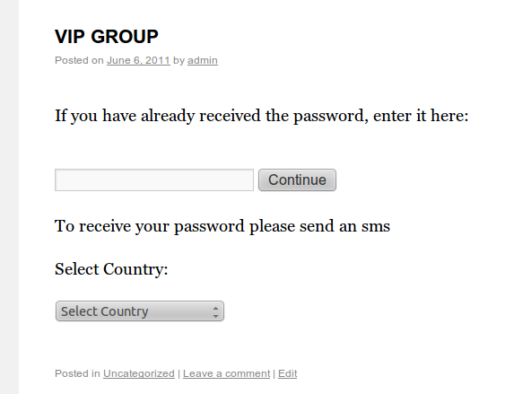
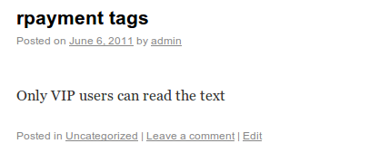
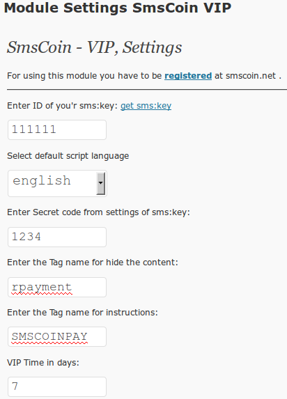

SmsCoin - sms: key payment module that enables user to access the hidden text (for WordPress)by sending an SMS message, based on SMS:key service (Local version).All information within this software product, is the intellectual property of SmsCoin, Israel. Given software can be used by http://smscoin.com/ clients for sms:key service only. Any other use of the software is violation of the company's right and will be pursued according to operating law. SmsCoin. Israel will not be held liable for any loss or damage of any kind as a result of using this software, including any lost revenues and/or data. |
How it works:This plugin enables you to provide paid access to any content on your website.In reply SMS user receives a short text password (key), and following its activation, user moves to VIP group. You define the page on which user will pay for the transition to VIP group, indicate the following tag [SMSCOINPAY]. You decide which articles you want close with the tags [rpayment]. You can emulate the process of paid registration by estblishing the period time in VIP group (Vip Time) that equals to a large number, for example 99999 days. In this case, by paying for VIP status the user has the right to access the hidden content during the enture time of website existence At the end the time period in VIP group, the user receives an SMS message the text of which is determined by you. (Tip: In the letter itself you should attach the link to the payment page). Example ( [SMSCOINPAY] tag):  Example (tag [rpayment] text [/ rpayment]):  We advice you not to use the module several times on the same page. |
Installation:
Example:  Setup process is completed!Uninstallation:Module is uninstalled. |